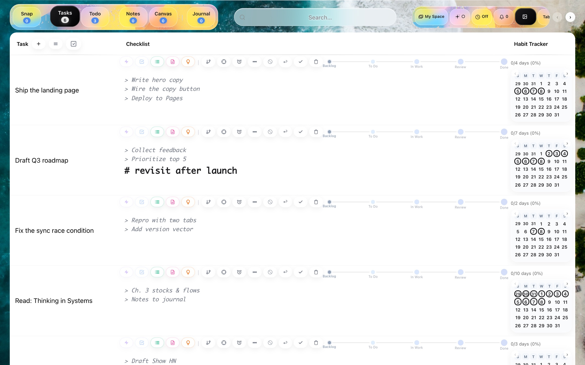

Your whole workday, on your Mac. Nowhere else.
Tasks, notes, todos, journal, habits, and a canvas — one quiet dashboard. No account, no cloud, no data leaving your machine.

New to the terminal? Press ⌘ Space, type Terminal, hit Return — then paste the line above and press Return.
Taskdash is distributed unsigned, so the installer clears macOS quarantine for you and installs at the user level — that's why it's one command instead of a drag-and-drop .dmg. It updates itself from then on.
Six tools that usually mean six apps.
Everything lives in the same place and links to everything else — a task carries its notes, its checklist, and its sketches. Minimal buttons, low friction, built to actually be used every day.
Tasks
Stages, subtasks, a pipeline that promotes work when it's ready.
Todos
Quick lists and temporary tabs that group around a task, then expire.
Notes
Folders and a Markdown editor with live formatting, linked to your work.
Journal
Daily entries, a mood heatmap, and a habit tracker beside them.
Reminders
Native notifications that fire on time and sync across your tabs.
Canvas
An Excalidraw whiteboard for anything that's easier drawn than typed.
Nothing leaves your machine.
Taskdash runs a small server on 127.0.0.1 — your own computer. There is no remote backend to send your data to, because there isn't one at all.
Open it and start. Nothing to create, nothing to log into.
Data is stored on your disk, versioned per change — you can read it directly.
Checks for new versions, verifies them, swaps in place, relaunches.
An agent OS, not just a dashboard.
Every feature is a node at a path, driven by the same actions, events, and state that the interface uses — so a script or an AI agent can operate Taskdash exactly the way you do.
A file-system-shaped kernel with permissions, rate limits, a process table, and a plugin registry. The dashboard is one client of it — agents are another.
Good to know.
Is Taskdash free?
Yes — free to download and use on your Mac. Nothing to buy, no subscription, no account.
Does my data leave my Mac?
No. Taskdash runs a small local server on 127.0.0.1 and stores everything on your own disk. There's no cloud backend and no account — nothing to send anywhere.
Does it work offline?
Completely. Everything runs locally, so Taskdash works with no internet at all. A connection is only used to check for app updates.
Why is it a terminal command instead of a normal download?
Taskdash isn't Apple-code-signed yet, so a double-clicked .dmg would be blocked by macOS Gatekeeper. The one-line installer clears that for you and sets up automatic updates. Signing is on the roadmap.
Which Macs are supported?
macOS 11 (Big Sur) and later, on both Apple Silicon (M-series) and Intel.